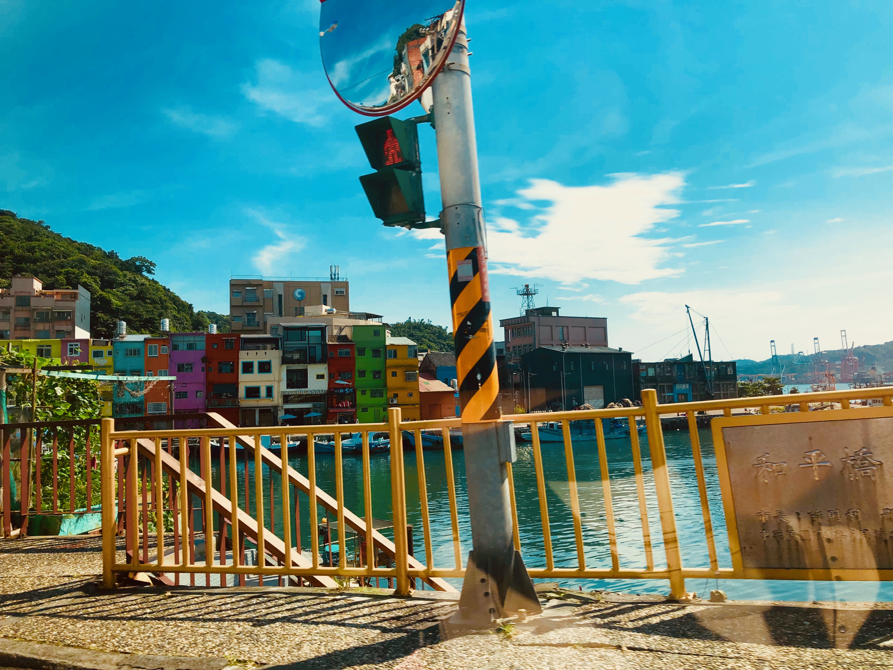
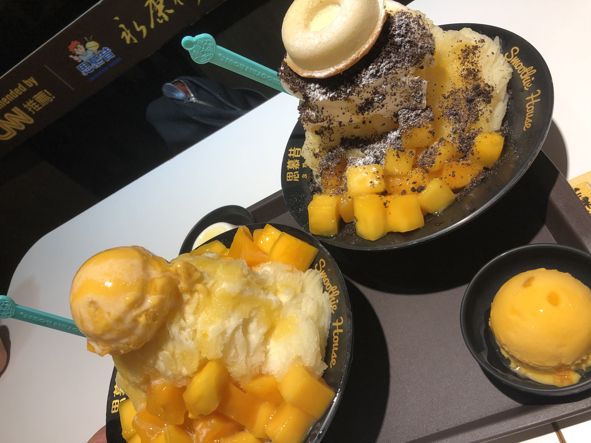
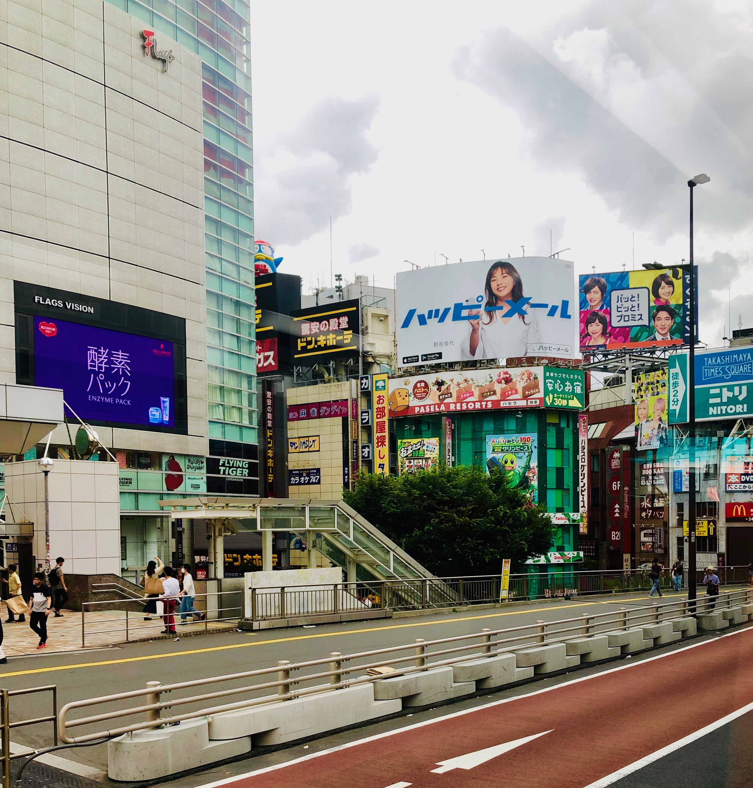
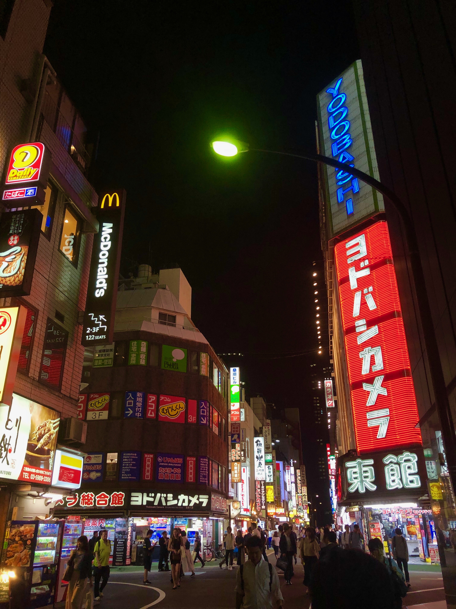
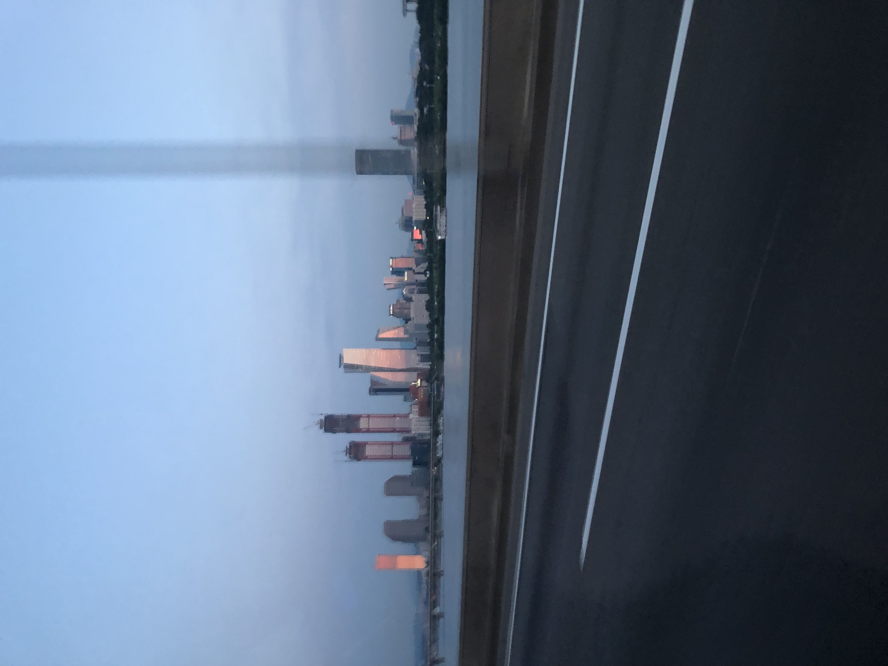
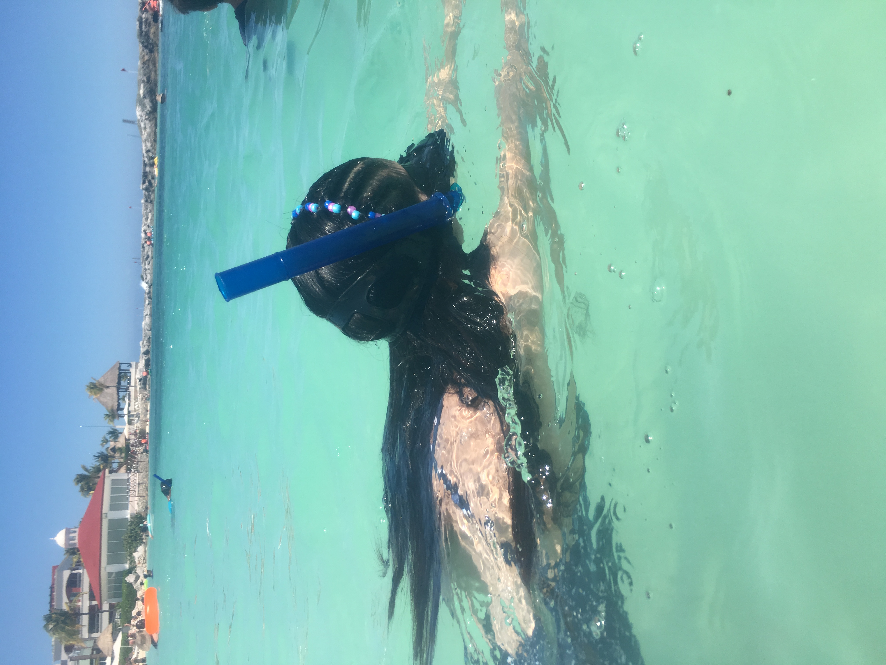

The reason why I chose traveling as one of my topics is because it allowed me to experience other cultures and see the lifestyles of people from around the world. Travelling is something that really changed me as a person and affected my way on viewing things.This activity is also something I've been doing since I was young which will always hold a special place in my heart.
 One of my favorite places to travel is Taiwan because it is where my parents are from and there's family to visit. The street food and cuisine tastes absolutely delicious and is one of the main factors of why I love the little island so much.
 Japan is also very different compared to the reality I'm used to in Irvine. The streets of Tokyo are truely amazing and it seems like there are an endless amount of things to do in that country. The city lights and night life is one of the main contributing factors to the great environment.

I found many similarities from South Korea's streets to Taiwan. However, the majority of the food is spicy and highly delectable. Korea's food is definitely something every spice-lover should try.
Continuing, animals are also something I absolutely love. I have always been an animal lover my whole life and the reasons are very similar to nature.I always feel like I can be myself around them and I feel very relaxed around them.
Finally, my family's favorite spring break vacation spot is Mexico! The beautiful country is not only close to where we are located, but the culture is very beautiful and the nature/environment as well. I have been to Cancun, Puerto Vallarta, and Los Cabos.